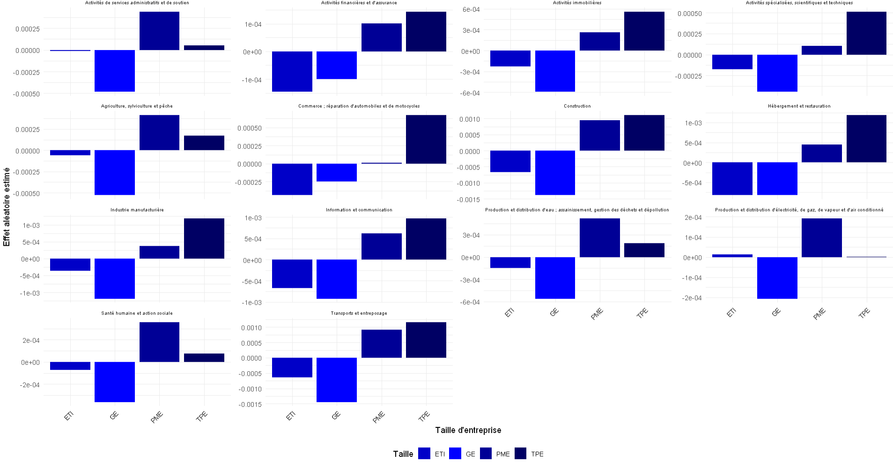
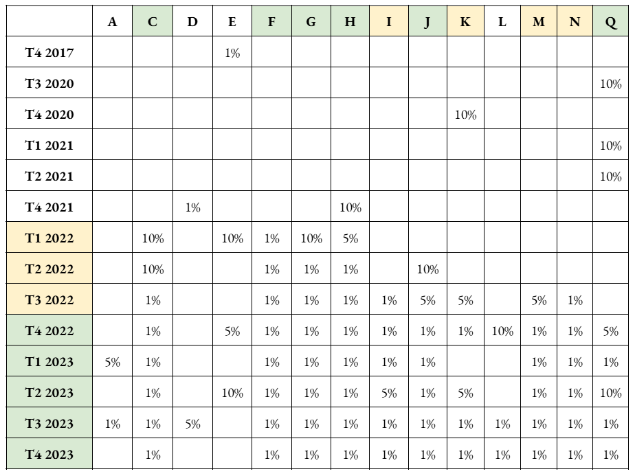

Données de Panel
Analyse des comportements dans le temps
- Analyse :
- TPE : Augmentation notable des écarts, surtout dans les secteurs financiers, communication et commerce.
- PME : Hausse des défauts dans l’industrie manufacturière, les transports et la santé.
- ETI : Variabilité selon les secteurs : hausse dans les transports et l’industrie, réduction après 2022 dans d’autres.
- GE : Augmentation dans l’industrie manufacturière et les activités financières, stabilité dans la construction.
Conclusion : Les petites entreprises sont plus vulnérables, tandis que les grandes entreprises affichent une résilience sectorielle. Nous pouvons aussi voir qu’à partir de 2022, nous avons une forte hausse du taux de défaillance généralisé dans tous les secteurs.
Données de Panel
Cette section présente les résultats de la modélisation en données de panel sur les défaillances d’entreprises, analysées selon le secteur d’activité (s), la taille (t) et le semestre (q). La variable étudiée, D (t,q,s), représente le taux de défaillance pour un groupe d’entreprises du secteur (s), de taille (t), au semestre (q).
L’objectif est d’explorer la relation entre les défaillances d’entreprises de tailles similaires dans un même secteur. Pour cela, la base initiale est divisée en 14 sous-bases correspondant aux secteurs. Chaque sous-base est convertie au format panel, où les individus sont définis par la taille des entreprises et le semestre.
Les modèles estimés incluent les effets fixes et aléatoires, avec un choix final basé sur le test de Hausman, qui évalue la pertinence des effets aléatoires par rapport aux effets fixes.
Données de Panel - Équation
Effets de la taille sur le taux de défaillance
Effets temporelle sur le taux de défaillance
Analyse des effets temporels :
- Les défaillances sectorielles s’intensifient dès 2022, portées par la guerre en Ukraine et le rattrapage des défaillances évitées pendant la crise sanitaire.
- Certains secteurs, comme l’agriculture et l’immobilier, affichent une résilience notable face aux fluctuations économiques.
- D’autres secteurs, comme l’hébergement, les activités financières, et les services administratifs, subissent une forte vulnérabilité, notamment depuis 2022.
- Les secteurs de l’industrie manufacturière, de la construction et du commerce enregistrent des vagues de défaillances persistantes sur deux ans consécutifs.
- Le secteur de la santé humaine a connu une baisse temporaire des défaillances en 2020 et 2021 durant la COVID, avant une reprise progressive.
Analyse des effets temporels :
- Les taux d’intérêt impactent fortement les taux de défaillance des entreprises dans tous les secteurs, à l’exception de celui de la production et distribution d’électricité, de gaz, de vapeur et d’air conditionné (D). Par ailleurs, le prix international des matières premières importées apparaît comme un facteur secondaire influençant les défaillances dans les secteurs manufacturières (C), de la construction (F), du commerce (G), du transport et entreposage (H), ainsi que des activités spécialisées scientifiques et techniques (M).
Analyse complète des variables influentes sur Y.
- La variable synthétique des investissements et infrastructures économiques est la plus déterminante pour expliquer les défaillances dans presque tous les secteurs.
- Les taux de chômage et d’intérêt, la confiance des ménages, les logiciels et bases de données, ainsi que les tendances Google liées aux séismes et aux orages apparaissent comme des facteurs secondaires dans l’économie en général.